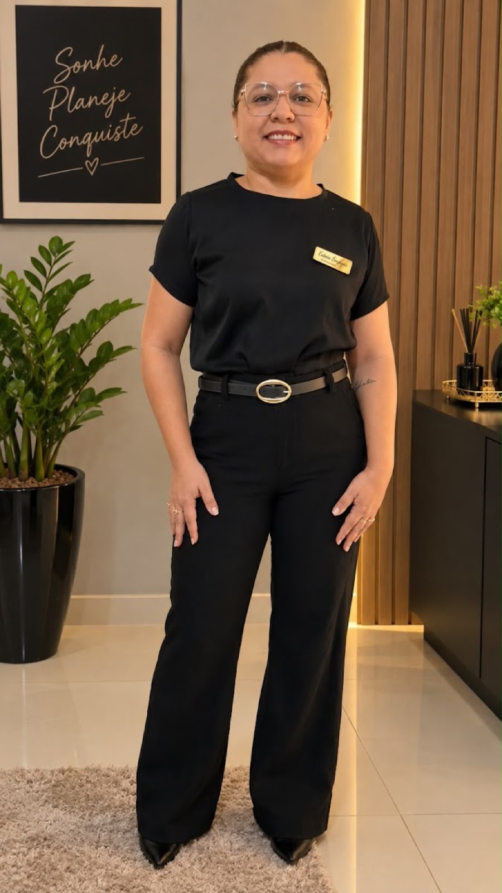

Sou assessora e cerimonialista de casamentos em Maranguape. O meu trabalho é estar ao lado de vocês desde a primeira ideia até o fim da festa, organizando o que dá trabalho para que o casal só precise viver o dia.
Gosto de conversar com calma, entender a história e o jeito de cada casal e transformar isso num casamento que tenha a cara de vocês.

Evânia SampaioA frase que está na parede do meu espaço é também o caminho que a gente percorre juntos até o grande dia.
Na primeira conversa, vocês contam como imaginam o casamento: o clima, os convidados, o que não pode faltar. Sem pressa e sem fórmula pronta.
Com o sonho no papel, a gente organiza orçamento, fornecedores e cronograma, etapa por etapa, para nada ficar para a última hora.
No dia, eu conduzo a cerimônia e a festa e resolvo os imprevistos nos bastidores. A vocês, cabe aproveitar.
Dá para contratar o acompanhamento completo ou só o cerimonial do grande dia. Na conversa, a gente vê o que faz mais sentido para vocês.
Fornecedores, horários e dúvidas passam por quem já conhece todo o planejamento.
Ninguém da família precisa ficar cuidando de horário, entrega ou cortejo.
Atendimento em Maranguape e região, com encontros para planejar cada etapa.
Responda cinco perguntas e veja um cronograma sugerido até a data. No fim, a mensagem para a Evânia já vai pronta pelo WhatsApp.
Me chame no WhatsApp para marcar um horário. Vai ser um prazer conhecer vocês.